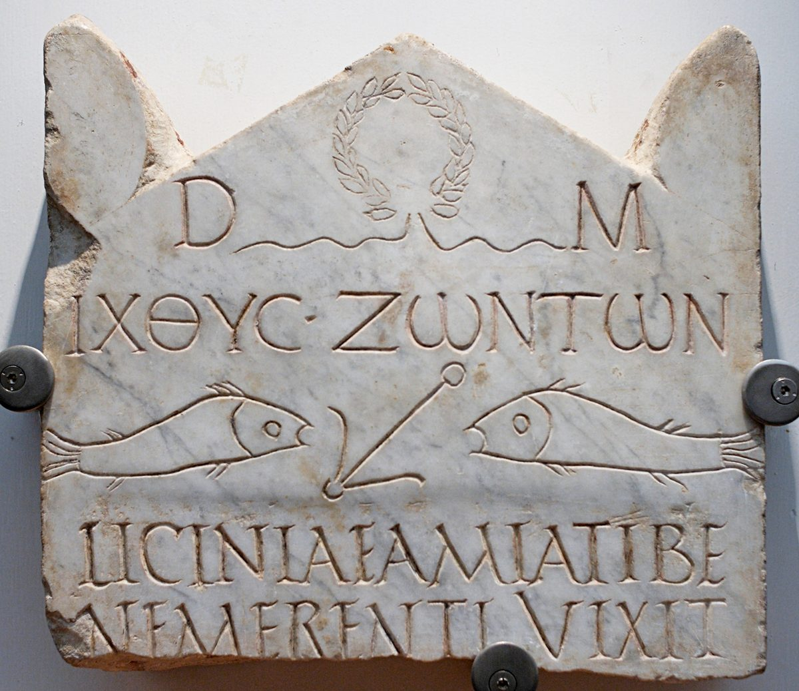

Hebrews 6 — The Mister Translation

⚠ One of the oldest Christian gravestones from Rome, found near the Vatican necropolis: the Greek ‘fish of the living’ above two fish and an anchor, the image of verse 19, ‘an anchor of the soul, both secure and firm.’

Translator’s Notes
“Leaving behind the beginning teaching about the Christ, let us be carried on to maturity.” “The beginning teaching” picks up the “first elements” of Hebrews 5:12, archē both times. Teleiotēs, “maturity,” stands in two verses: love as “the bond of maturity” at Colossians 3:14, and here (dictionary); it is the noun of the “mature” of Hebrews 5:14. “Let us be carried” is a passive: the readers are to let themselves be borne along, with the verb of Hebrews 1:3, “upholding all things.” The KJV reads “Therefore leaving the principles of the doctrine of Christ, let us go on unto perfection”; the ASV reads “let us press on unto perfection”; the NWT 1984 reads “let us press on to maturity.”
“Teaching about washings and laying on of hands, about resurrection of the dead and eternal judgment.” Baptismos stands in four verses: “the washing of cups and pitchers” at Mark 7:4, “buried with him in baptism” at Colossians 2:12, here, and Hebrews 9:10 (dictionary). Here it is plural, and readers take the “washings” as the Law’s purifications, as Christian baptism set beside other washings, or as both; this translation prints “washings” and leaves the range here. “Laying on of hands” is the phrase of 1 Timothy 4:14 and 2 Timothy 1:6. The printed text has “teaching” in the accusative, with Westcott–Hort; Tregelles, Nestle–Aland 28 and Robinson–Pierpont have the genitive, “of teaching” (the apparatus). The KJV reads “Of the doctrine of baptisms, and of laying on of hands”; the NIV reads “instruction about cleansing rites”; the NWT 1984 reads “the teaching on baptisms.”
“And this we will do, if God permits.” The phrase is Paul’s at 1 Corinthians 16:7, “if the Lord permits.” Robinson–Pierpont has “let us do” (the apparatus). The KJV reads “And this will we do, if God permit”; the NWT 1984 reads “And this we will do, if God indeed permits”; the NIV reads “And God permitting, we will do so.”
“Those who have once been enlightened, who have tasted the heavenly gift and become sharers in the Holy Spirit, and have tasted the good word of God and the powers of the age to come.” “Enlightened” returns at 10:32. “Tasted” is the verb of Hebrews 2:9, “taste death.” “Sharers” is metochoi, the “companions” of Hebrews 3:1 and 3:14 (dictionary). “The powers of the age to come” recall the “acts of power” of Hebrews 2:4 and “the inhabited world to come” of 2:5. The KJV reads “For it is impossible for those who were once enlightened, and have tasted of the heavenly gift”; the ASV reads “and tasted the good word of God, and the powers of the age to come”; the NWT 1984 reads “and who have become partakers of holy spirit,” with “holy spirit” lower-cased, in keeping with its teaching that the spirit is God’s active force.
⚠ “And then have fallen away, to renew them again to repentance, as they crucify the Son of God again for themselves and expose him to disgrace.” Parapiptō, “to fall away,” stands in one verse of the New Testament (dictionary), and so does anastauroō, read as “crucify again” or simply “crucify” (dictionary). “Expose to disgrace” is the verb of Matthew 1:19, “unwilling to expose her to disgrace,” with a prefix (dictionary). “Crucify” and “expose” are present participles, read as the reason (“since they crucify”) or as the time (“while they go on crucifying”). Traditions divide over the whole passage: whether it describes believers who can fall away beyond return, people who tasted without ever truly believing, a warning stated so that it will not happen, or an impossibility on the human side only. This page does not choose. The KJV reads “If they shall fall away, to renew them again unto repentance”; the ASV reads “and then fell away, it is impossible to renew them again unto repentance”; the NWT 1984 reads “but who have fallen away, to revive them again to repentance”; the NIV reads “they are crucifying the Son of God all over again.”
⚠ A documented use of the passage. Tertullian, in On Modesty (chapter 20), cites “an Epistle to the Hebrews under the name of Barnabas,” quotes these verses, and concludes that its writer “never knew of any second repentance promised by apostles to the adulterer and fornicator” (read in the English of the Ante-Nicene Fathers, at newadvent.org). The verses were used, that is, to refuse a penitent sinner any return to the congregation. The churches did not as a rule follow that reading. The passage speaks of those who have “fallen away” from what they had tasted, and names no particular sin; and the same letter tells the readers to exhort one another “so that not one of you is hardened” (Hebrews 3:13).
“For land that drinks the rain that often comes upon it … but if it bears thorns and thistles, it is worthless and near to a curse.” The land that “drinks water from the rain of the heavens” is Moses’ description of the land at Deuteronomy 11:11. “Thorns and thistles” are the words of the Greek of Genesis 3:18, “It will produce thorns and thistles for you” (checked), spoken to Adam beside the cursed ground; Jesus asks “Are grapes gathered from thorns, or figs from thistles?” at Matthew 7:16. “Worthless” is adokimos, as at Titus 1:16 (dictionary). Euthetos, “useful, fit,” stands in three verses, among them “fit for the kingdom of God” at Luke 9:62. The KJV reads “But that which beareth thorns and briers is rejected, and is nigh unto cursing”; the ASV reads “but if it beareth thorns and thistles, it is rejected and nigh unto a curse”; the NIV reads “In the end it will be burned.”
“But concerning you, beloved, we are convinced of better things, things that belong to salvation, even though we speak this way.” Agapētoi, “beloved,” is the only time the letter addresses its readers so. “Better” is kreittōn, the letter’s word for what the Son brings: “superior to the angels” at Hebrews 1:4, “something better” at Hebrews 11:40. The KJV reads “But, beloved, we are persuaded better things of you, and things that accompany salvation”; the NWT 1984 reads “we are convinced of better things and things accompanied with salvation”; the Douay reads “we trust better things of you, and nearer to salvation.”
“For God is not unjust, so as to forget your work and the love you showed toward his name in serving the saints and continuing to serve them.” The Byzantine text reads “your work and the labor of love” (the apparatus), the phrase of 1 Thessalonians 1:3, “labour of love.” “Serving” is diakoneō: the readers’ love took the form of serving others in the congregation, and it is still going on. The KJV reads “to forget your work and labour of love”; the ASV reads “to forget your work and the love which ye showed toward his name”; the NIV reads “God is not unjust; he will not forget your work.”
“The same eagerness for the full assurance of the hope to the end, so that you may not become sluggish, but imitators of those who through faith and patience inherit the promises.” “Full assurance” is plērophoria, as at 1 Thessalonians 1:5 (dictionary). “Sluggish” pays off Hebrews 5:11, “you have become sluggish in hearing” (dictionary). “Imitators” is mimētai, as in “Become imitators of me” at 1 Corinthians 11:1 (dictionary); “patience” is makrothymia (dictionary). Those who “inherit the promises” are the people of chapter 11, and the next verse names the first of them. The KJV reads “That ye be not slothful, but followers of them who through faith and patience inherit the promises”; the ASV reads “that ye be not sluggish, but imitators”; the NIV reads “We do not want you to become lazy.”
“He swore by himself, saying, ‘Surely, blessing I will bless you, and multiplying I will multiply you.’” The oath is Genesis 22:16, “By myself I have sworn — declares Jehovah,” after the binding of Isaac; the promise is 22:17. The Hebrew doubles each verb, barekh avarekhkha, “blessing I will bless you” (checked), and this translation keeps the doubling here, where Genesis 22:17 prints “I will surely bless you.” The Greek of Genesis has “I will multiply your seed”; Hebrews has “I will multiply you” (checked). The printed text begins ei mēn, “surely”; Robinson–Pierpont has ē mēn, the spelling of the Greek of Genesis 22:17 (the apparatus; checked). Zechariah’s song calls it “the oath that he swore to Abraham our father” (Luke 1:73). The KJV reads “Saying, Surely blessing I will bless thee, and multiplying I will multiply thee”; the NWT 1984 reads “Assuredly in blessing I will bless you”; the NIV reads “I will surely bless you and give you many descendants.”
“And so, having waited patiently, he obtained the promise.” “Waited patiently” is makrothymeō, the verb of the “patience” of verse 12: Abraham is the first of the imitators the readers are to copy. The KJV reads “And so, after he had patiently endured, he obtained the promise”; the ASV reads “And thus, having patiently endured”; the NIV reads “And so after waiting patiently, Abraham received what was promised.”
“God … guaranteed it with an oath, so that by two unchangeable things, in which it is impossible for God to lie, we who have fled for refuge might have strong encouragement.” Mesiteuō, “to act as guarantor,” stands in one verse (dictionary); it is the verb of mesitēs, “mediator,” the word of Galatians 3:19 and 1 Timothy 2:5. Ametathetos, “unchangeable,” stands in two verses, verses 17 and 18 (dictionary). The two things are the promise and the oath. “Impossible” is the word of verse 4, now turned the other way: there it was impossible to renew, here it is impossible for God to lie, as in “the God who does not lie” at Titus 1:2 and “God is not a man, that he should lie” at Numbers 23:19. “We who have fled for refuge” is katapheugō, the verb the Greek of Deuteronomy 4:42 uses for the manslayer who flees to a city of refuge (checked). The KJV reads “we might have a strong consolation, who have fled for refuge to lay hold upon the hope set before us”; the ASV reads “interposed with an oath”; the NWT 1984 reads “stepped in with an oath.”
“We have this as an anchor of the soul, both secure and firm, and entering inside the curtain.” Ankyra, “anchor,” stands in four verses: three in the storm of Acts 27:29, 27:30 and 27:40, and here (dictionary). “Firm” is bebaios, as at Hebrews 2:2 and 3:14. “Inside the curtain” is, word for word, the phrase of the Greek of Leviticus 16:2 and 16:12, where Aaron is to go “inside the veil” once a year (checked); this translation prints “veil” in Leviticus for the Hebrew parokhet and “curtain” in the New Testament, as at Matthew 27:51 (dictionary). The hope is anchored where the high priest went. The KJV reads “Which hope we have as an anchor of the soul, both sure and stedfast”; the ASV reads “entering into that which is within the veil”; the NIV reads “It enters the inner sanctuary behind the curtain.”
“Where a forerunner has entered for us, Jesus, having become a high priest forever according to the order of Melchizedek.” Prodromos, “forerunner,” stands in one verse of the New Testament (dictionary): the high priest of Leviticus went in alone and was the only one in the tent until he came out (Leviticus 16:17), and this one goes in ahead of others who will follow. The line returns to Psalm 110:4, quoted at Hebrews 5:6, and opens chapter 7, where Melchizedek himself is the subject (encyclopedia). The KJV reads “Whither the forerunner is for us entered, even Jesus”; the ASV reads “whither as a forerunner Jesus entered for us”; the NIV reads “where our forerunner, Jesus, has entered on our behalf.”
Patterns worth carrying forward
Where this translation keeps the exact words: “maturity,” the noun of 5:14’s “mature”; “washings” for the plural baptismoi; “laying on of hands,” as at 1 Timothy 4:14; “tasted,” as at 2:9; “sharers” for metochoi, the “companions” of 3:1; “fallen away”; “crucify again,” with “crucify” in the note; “expose to disgrace,” as at Matthew 1:19; “thorns and thistles,” as at Genesis 3:18; “worthless,” as at Titus 1:16; “sluggish,” as at 5:11; “full assurance,” as at 1 Thessalonians 1:5; “blessing I will bless you,” the doubled verbs kept; “impossible” in verses 4 and 18; “fled for refuge,” the verb of the cities of refuge; “anchor,” as at Acts 27:29; “inside the curtain”; and “forerunner.”
Echoes paid. The first elements of Hebrews 5:12; mature from Hebrews 5:14; taste from Hebrews 2:9; the companions of Hebrews 3:14; the acts of power of Hebrews 2:4; expose to disgrace from Matthew 1:19; the land that drinks the rain of Deuteronomy 11:11; thorns and thistles from Genesis 3:18; something better from Hebrews 11:40; the labour of love of 1 Thessalonians 1:3; sluggish from Hebrews 5:11; the oath by myself at Genesis 22:16; the God who does not lie from Titus 1:2; the city of refuge at Deuteronomy 4:42; the anchors of Acts 27:29; and inside the veil from Leviticus 16:2.
Echoes planted. Melchizedek “king of Salem, priest of God Most High” at 7:1; “washings” at 9:10; “enlightened” at 10:32.
Next in this book: Hebrews 7, already on these pages. Melchizedek, “king of righteousness” and “king of peace,” “without father, without mother, without genealogy”; Abraham’s tenth, and Levi who “paid tithes” through Abraham; a priest “according to the power of an indestructible life”; and the oath of Psalm 110, “Jehovah has sworn and will not change his mind.”